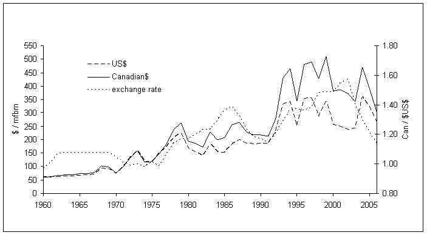
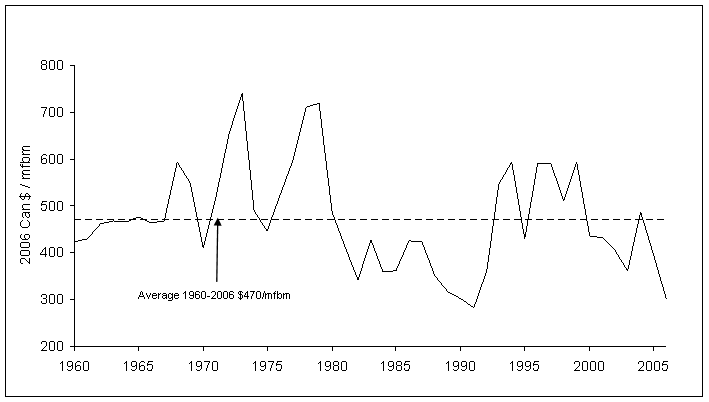
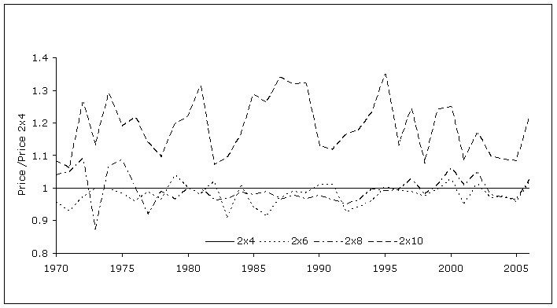
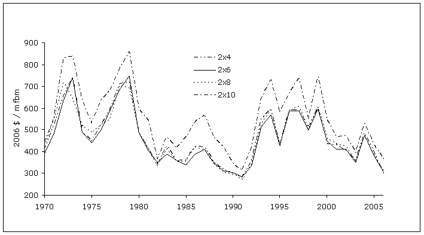
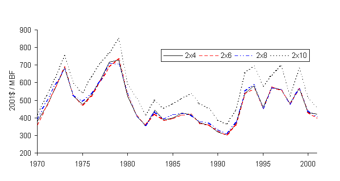
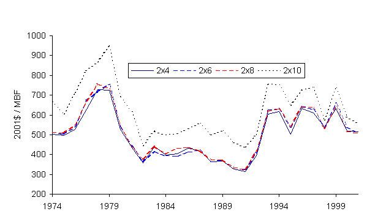
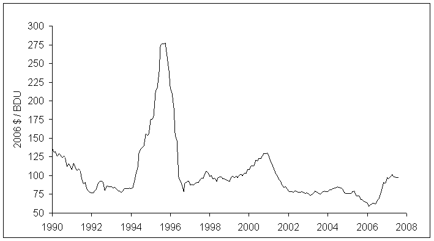
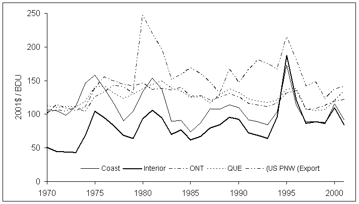

In this Topic Hide
FAN$IER's default price tables are viewed with the Activity Costs & Product Prices viewer accessed through the Help menu within FAN$IER's Main Menu.
The long-run real price for each species and dimension listed is the average for the period studied. Since lumber prices are not available for all species and dimensions, available prices are used as proxies for those without reported prices. SPF prices are used for lodgepole pine, interior western hemlock and all spruce prices; coastal western hemlock prices are used for amabilis fir, mountain hemlock and subalpine fir; fir-larch prices are used for interior Douglas fir, western larch, ponderosa pine and white pine.
For ponderosa pine and white pine, historic prices for both species are for 1x lumber, rather than 2x lumber as reported by TASS and TIPSY. LRF's and milling cost estimates for 2x lumber are not applicable to 1x lumber production. Consequently, fir-larch 2x lumber prices are used as defaults for ponderosa pine and white pine 2x lumber estimates. Fir-larch has the highest 2x lumber price in the interior.
For hardwood prices, see Hardwood Economics.
The discussion below focuses on historic price trends for structural dimension lumber in relation to the North American building industry. Historically, this was the most common type of lumber produced in BC. Growing Asian markets are challenging this trend. However, structural dimension lumber is still the only type of lumber estimate provided by TASS and TIPSY, and it is limited to a range of (nominal) 2-inch lumber dimensions, i.e., 2x4, 2x6, 2x8, and 2x10.
International lumber supply and demand forces determine the price of structural dimension lumber (i.e., 2x dimensions). As the market for lumber includes many buyers and sellers, we consider it to be a relatively competitive market, where lumber producers act as price takers. The demand for lumber is known as a derived demand since lumber isn't directly consumed by households. Instead it is consumed indirectly in the production of housing and other products. Thus, the demand for lumber is derived from the demand for the final demand goods such as houses.
As the major market for lumber in North America is the U.S., the prices for lumber are set in U.S. dollars. The price Canadian producers receive is determined by the international market factors plus the current Canada/U.S. exchange rate. The difference in the exchange rates acts to amplify changes in the U.S. prices.
Product prices are species specific. If you have a pure stand, then that species will be displayed. If you select a multiple species stand, you can switch among product prices by selecting another species in the dialog box. For a multiple species stand, the product price assumptions displayed in the output will be the weighted average prices (weighted by species volumes).
Figure 3-4 below graphs the average annual price of kiln dried standard and better western spruce-pine-fir 2x4 random length lumber, and the changes in the Canada/U.S. exchange rate for the period 1960 to 2006 (Random Length Publications Inc., various years). It also shows the general trend in rising lumber prices over the period 1960-2006. The effects of inflation must be removed, however, in order to see if any real price increase has occurred. Real prices are measured in constant dollars for some base year to which the prices in other years are adjusted, using a suitable price index. This removes the effects of inflation.

FIGURE 3-4. Trends in lumber prices (Western SPF Standard & Better 2x4 Random Length) vs. US/Cdn exchange rates..
The prices in Canadian dollars per thousand board feet of lumber were adjusted to constant 2006 dollars using the consumer price index (CPI) for Canada, and the results shown in Figure 3-5 below. Note that real price fluctuated between $280-740/MBF with an average of $470/MBF over the period shown. A slight downward trend appears in the diagram. It also shows the extreme volatility of lumber prices over time. This volatility appears even greater with monthly prices. The weak downward trend is largely due to the rapid increase in the Canadian dollar over the past 5 years, sharply contrasting with the previous 25 years.

FIGURE 3-5. Trends in lumber prices in constant 2006 dollars (Western SPF Standard & Better 2x4 Random Length).
Figure 3-6 shows the price fluctuations of structural dimension lumber, by dimension, in constant 2006 Canadian dollars per MBF for western spruce-pine-fir (SPF) kiln dried standard and better random lengths lumber. Not surprisingly, each dimension tracks the other quite closely. This is more obvious in Figure 3-7. The ratio for 2x6 and 2x8 lumber fluctuated around one and averaged 0.98 and 0.99 respectively over the period shown. The ratio for 2x10 lumber varied between 1.1 and 1.3 with an average of 1.2 over the period shown.
FIGURE 3-6. Trends in SPF Lumber Prices By Dimension in constant 2006 Canadian Dollars.

FIGURE 3-7. Ratio of the Price of SPF Dimension Lumber Relative to the Price of 2x4 Lumber.
Figures 3-6a, 3-6b and 3-6c below provide similar details on real price trends for kiln dried Douglas-fir, hemlock, fir-larch dimension lumber prices. As with western SPF, the graphs of real prices for these other species do not suggest any trends in real price increases.

FIGURE 3-6a. Trends in Douglas-fir lumber prices by dimension (2001 Canadian $ / MBF).

FIGURE 3-6b. Trends in hemlock lumber prices by dimension (2001 Canadian $ / MBF).

FIGURE 3-6c. Trends in fir-larch lumber prices by dimension (2001 Canadian $ / MBF).
The Ministry of Forests Revenue Branch collects data on the arms length sales of residual wood chips from sawmills to pulp mills in the interior of B.C. (Thus they exclude intra-firm transfers of wood chips within vertically integrated firms.) The pulp mill gate prices are adjusted by the estimated freight haul cost to produce an estimate of the sawmill gate prices for each appraisal point in the interior. For 2001 the average interior price for whitewood chips was $89.91/BDU. Using this information and Statistics Canada’s Pulp Chip Price Index for the interior, Figure 3-8 below shows the average market values for whitewood wood chips for the period January 1990 to August 2007. Whitewood refers to all conifer species except western redcedar.

FIGURE 3-8. Interior average market value for whitewood wood chips. (Constant 2006 Dollars per Bone Dry Unit).
Chip prices were quite stable until the end of 1994 when prices increased sharply. The price increase was attributable to a robust pulp market which rapidly increased the price of market pulp, coupled with a tightening of chip supplies in the interior. The up-turn in pulp prices was short lived, however, and chip AMVs began to fall with the falling price of pulp which began at the end of 1995. Since 1997 chip prices have fluctuated between $60 and $130 per BDU.
Some studies conclude that the market for residual wood chips in the interior hasn't produced competitive prices because of the potential oligopolistic power of pulp mills relative to sawmills (see for example, Nelson et al., 1994).
Then how do we estimate the long-run average real price for wood chips? Figure 3-9 below graphs the real price trends for North American wood chips over the period 1970-2001. The original data was collected by RISI over this period and was expressed in nominal Canadian dollars per tonne for the Canadian markets and in nominal U.S dollars per short ton for the U.S. Pacific Northwest export market. The data was converted to dollars per BDU and then to constant Canadian dollars per BDU using the CPI and the Canada/U.S. exchange rate where appropriate. The graph does show that, in the past, chip prices were significantly lower in the interior than in the other regions, but since 1994 have converged with B.C. coast prices. This trend indicates that the pulp chip market is now a province wide market. The average price for wood chips over the period graphed was: B.C. coast $109/BDU, B.C. interior $83/BDU, Ontario $125/BDU Quebec $126/BDU and U.S. Pacific Northwest export $152/BDU. Prices were f.o.b. (free on board) mill for all regions except the U.S. PNW which was f.a.s. (free along side).
The price trends and averages for Ontario, Quebec and the U.S. Pacific Northwest are quite close and suggest that the world wood chip price level is currently between $120 and $150 per BDU (f.o.b. mill). Thus, the assumption of a long-run average price for whitewood wood chips in B.C. of $110/BDU continues to appear reasonable.
Average market values for western redcedar wood chips in the interior have ranged from $10 to $19 per BDU. Since pulp mills view cedar chips as an inferior product, it doesn't appear that cedar chips will increase in real value in the foreseeable future. Thus, the assumed long-run price for cedar chips is set at $15/BDU.

FIGURE 3-9. North American Trends in Chip Prices.